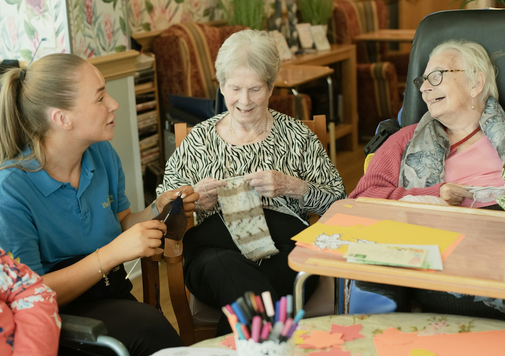

Healthcare Assistants (HCAs)
Supporting nursing and clinical teams on hospital wards and in health settings.
- Personal care and hygiene
- Mobility and repositioning
- Nutrition and hydration
- Observations under nursing guidance
Home / Services
Our servicesWe supply staff across four areas: hospitals, care homes, disability services and support caregiving. Whether you need one carer for a single shift or a team for the long term, we tailor our cover to your setting.
Supporting nursing and clinical teams on hospital wards and in health settings.
Warm, dignified support in residential and nursing homes. Senior carers can also take on shift-lead responsibilities.
Person-centred support for adults with learning disabilities, autism, mental health needs or complex care requirements.
General support care staff for daily living, companionship and community support, wherever extra help is needed.
Experienced, alert carers who keep people safe, settled and comfortable overnight, so your day team can hand over with confidence.
Dedicated staff for people who need continuous, close support, including enhanced observation, falls prevention and consistent, calm responses to distress.
Need a role that is not listed? Get in touch, as we may be able to help.
Urgent shifts and sickness gaps, covered as quickly as we can.
Recurring cover for predictable rotas and planned leave.
The same carers over several weeks, so people see familiar faces.
Out-of-hours staffing when it is hardest to find.
From busy hospital wards to quiet residential homes, our carers adapt to the pace and needs of every setting.

Person-centred careNo questions match your search. Ask us directly instead.
It depends on the role, shift and how much notice we have. For urgent requests please call us on 07438 811614, and we will tell you honestly what we can do.
Every carer goes through identity and right-to-work checks, an enhanced DBS check with barred list check, employment references and an interview before we place them. See our safeguarding page for the full process.
Yes. Continuity matters in care, so we aim to send familiar faces wherever we can, and block bookings are a good way to make that happen.
Yes. Tell us the pattern you need and we will do our best to fit it, including sleep-in and waking-night shifts.
Rates depend on the role, shift pattern and notice. Send us your requirements through the staff request form and we will give you a clear quote.
Let us know straight away. We will listen, deal with the issue and, where possible, arrange a replacement.
Send us your requirements and we will get back to you as soon as possible.